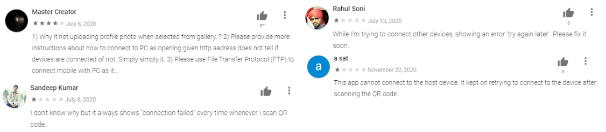
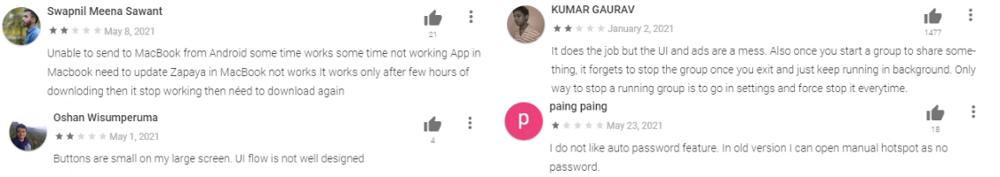
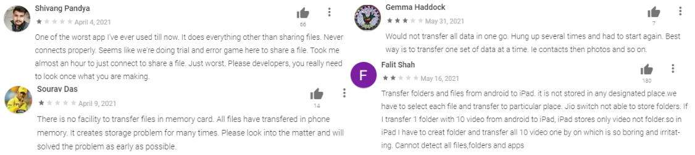
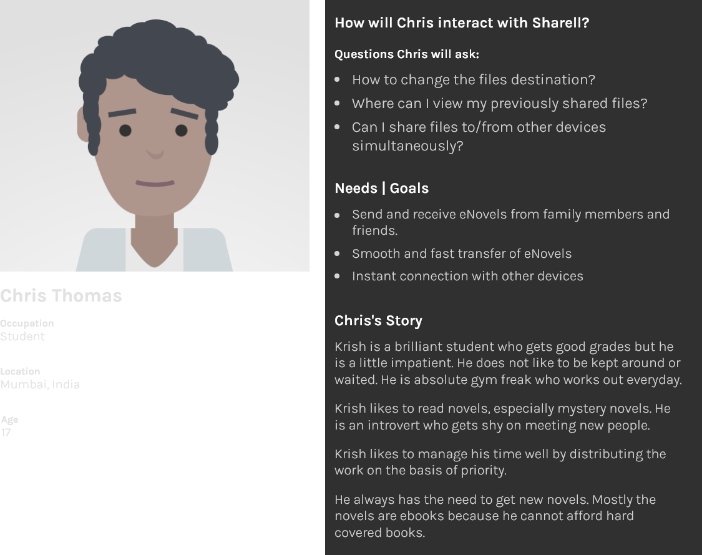
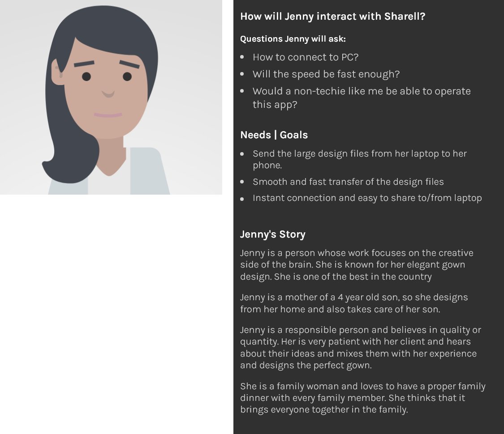
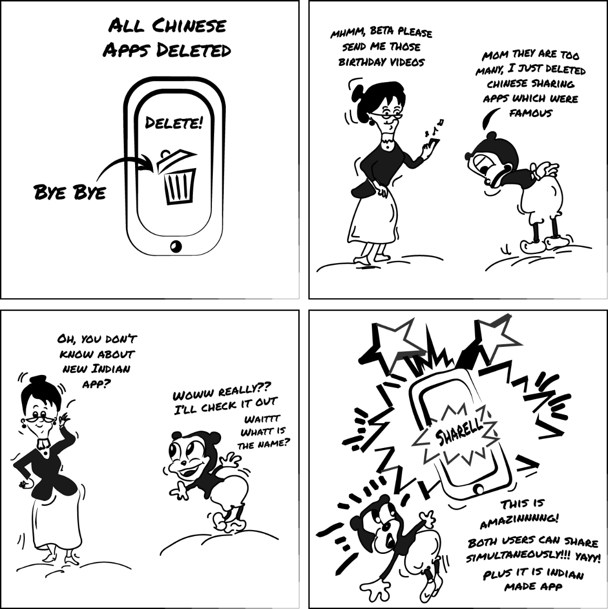

A little about this project
What is Sharell?
To establish some context here...Sharell is a free file sharing application which can
transfer all types of files including photos, videos, apps, docs, zips, etc. Any device can
share any type of file parallely with other devices regardless of the operating system and size of the file.
A user can share files simultaneously with many other users.
The Process
User-centric Approach

stage: empathize
Analyzing other apps
The first thing I did was analyzed competitor's apps and reviews to find the pain
points and base features for Sharell.
I analyzed 4 apps in detail and used other few more apps just to try the experience and interface

Garud reviews

Zapya reviews

Jio Switch reviews

One-to-one interviews
It was pandemic time in 2020 and everything was under lockdown,
so I couldn't interview people physically but I managed to do so virtually.
I asked few of my friends and family members
some questions to have better clarity about the problems and needs of users.
Q1. Do you frequently use this application?
Q2. How do you feel using this application?
Q3. Tell me about the time when you got stuck in the app
Q4. How to send a PDF file from PC to mobile?
Q5. What do you feel about the process of sending the photos?
Q6. What changes to make in the current application according to you?
What did I find out?
I gathered all the information and pain points
I could from the reviews and functionalities of competitor apps and user interviews.
Below given is the gist of the insights that I found
- Users want to have clear instructions in the app
- Sending file to/from the PC should not be complicated
- Connecting other devices should be seamless
- Users would like to have parallel sharing people i.e., both the devices able to simultaneously share files
- File sharing should be lightning fast
- History of files should be easily accessible
- Should be easily change the destination of to-be-received files
Empathy Maps - One step deeper

stage: define
User personas


Interviews, reviews analysis and competitor feature analysis helped me set the foundation for my research and
then I dived deep into empathizing with users by making an empathy map and personas based on empathy map.
I now have a strong foundation to lay out the structure of the app which minimises the user problems.
stage: execute
Lo-Fi Wireframes

Designing for what users want
Appropriate naming
In competitor analysis I found out that every app was using the
convention of “send” and “receive” buttons but it seemed irrelevant in our case.
Sharell has the feature of parallel sharing, so the users would be able to send and receive simultaneously.
So here both the users are senders and receivers. Thus, if both the users want to share the files,
the traditional naming convention would confuse them.
Therefore, I decided to name “connect” and “create”, which was obviously tested later and did good.

Grouping and accessibility
The main function of our app is to share files via Wi-Fi or hotspot connection.
So, the connection and it’s related settings were grouped together and placed at the
most accessible area of the mobile phone i.e., the bottom(According to the Thumb usage rule).
Not only connection related settings but also the most
frequently used functions like “progress” and “history” should be easily visible and accessible.
So I grouped all the frequently used options in one navbar

Re-imagining the progress tab
Progress bar in the apps I analyzed used tabs of sent and receives,
but what I did was place them like chats. The received files on the left and
sent files on the right. In this arrangement, the users need not recall
which is the received file, but recognize the interface as it matches the chatting apps.
This way of showing progress eliminates the need of toggling between 2 tabs.

Validating the Wireframes
I designed a usability test plan and conducted the usability testing of the
wireframes to validate the seamless app flow. Test scenarios were given to the
participants and their behavior was observed over online video call. Participants
were encouraged to speak up whatever came to their mind while using the prototype and
they were observed. Feedback received from the participants were analyzed,
which gave me more clarity on the user’s thought process.

Modifications after testing the wireframes
From the usability testing I got to know the loopholes in the so-thought seamless flow.
One major option lacking was the “Help” to guide users when they are stuck.
It was the most obvious thing that I missed in my design, but thanks to usability testing.
Visual Designing
I have analyzed the reviews and other apps, got to know the
pain points from the users, empathized with the users, made the basic structure of the app and now it's time
to do the thing which will please the users eyes - visual designing.
UI Design System

Marketing comic strip
Marketing is a very important aspect for any app's success, therefore I made a unique comic strip to market my app.
It was just an experiment, but I got a quite nice response from audience.
